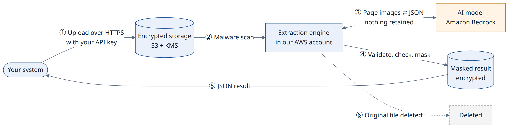
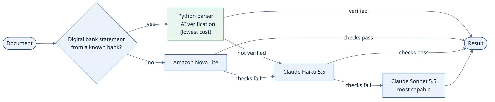

Turning invoices, bank statements, payslips, identity documents and KYC forms into structured data, with your customers' data protected at every step and a predictable, low running cost.
Security firstZero data retention by the AI service, customer isolation enforced by AWS, encryption everywhere
Low, usage-based costAbout USD 50 a month at 1,000 pages a day, with AI cost shown on every result. Nothing runs, or costs, while idle
Fast, verified resultsMeasured 5–10 seconds per document; every row of a digital bank statement checked against the original
Prepared for
[Client Name]
Prepared by
[Your Company]
Date
14 October 2026
Version
1.1 (platform built and running)
Classification
Confidential
1. Executive summary
We propose a secure, fully managed platform that extracts structured data from financial documents through a simple API. The platform is built and running on AWS, using Amazon Bedrock for the AI step. Your systems integrate through the API. It is designed around the two things that matter most to you: protecting your customers' data and keeping running costs low and predictable.
0
documents or results kept by the AI service, or found in our logs (verified)
3
independent layers keeping each customer's data separate
~$50
estimated monthly AWS cost at 1,000 pages per business day
~$0.002
estimated all-in cost per page
Data security
Your documents are never used to train AI models, and the AI model provider never receives them. Amazon Bedrock runs the models in AWS-owned accounts that the provider cannot access.
Nothing is kept by the AI service. Bedrock stores no prompts or outputs for the models we use, and its prompt-logging feature is switched off and watched by an alert. Before go-live we also lock the account's data-retention setting to "none", so any model that would keep data is blocked.
Customers are kept apart by AWS itself, not only by our code. A software bug cannot expose one customer's data to another.
Everything is encrypted, in transit (TLS 1.2+) and at rest (AWS KMS customer-managed keys).
Sensitive identifiers are masked automatically. Aadhaar numbers are always masked, and PAN, account, UAN, ID and phone numbers are masked by default.
Bank statements read by code inside our own environment. Digital statements from known banks are extracted by deterministic code, every row is reconciled against the document's own text, and an AI model independently confirms the key facts. Customers who prefer it can choose a mode where these documents are never sent to any AI service.
Original files are deleted right after processing, unless you opt in to keeping them. Retention is under your control: 7, 30, 90 or 365 days, or delete any time through the API.
Cost
About USD 50 per month at 1,000 pages per business day, all AWS costs of the running platform included.
You pay only for pages processed. No servers or GPUs run while idle, so a quiet day costs close to nothing.
Code first, AI where needed: most digital bank statements are read by deterministic code at almost no cost, with every result verified by AI. Other documents use the lowest-cost AI model that does the job well, and only difficult documents move to a stronger model.
Transparent cost: every result reports the AI tokens it used and its estimated AI cost. Budget alerts at 80% and 100%, and cost tracked per customer per day.
2. What the platform does
A multi-tenant extraction API that accepts a document and returns clean, validated JSON. Each of your customers (tenants) gets its own API keys and settings, and its data is fully isolated.
Supported documents
Document type
Key fields extracted
Automatic checks
Invoice
Number, dates, seller and buyer (name, GSTIN, PAN, address), line items with HSN/SAC, CGST/SGST/IGST, totals
Line items add up to the subtotal; subtotal + tax = total
Bank statement
Bank, account holder, account number, IFSC, period, balances, every transaction
Opening + credits − debits = closing; running balance on every row; for digital PDFs, every row and field reconciled with the document's text
Payslip
Employer, employee, PAN, UAN, pay period, earnings, deductions, gross, net
Earnings add up to gross; gross − deductions = net
Identity document
ID type (Aadhaar, PAN, passport, driving licence, voter ID), number, name, DOB, address, validity
PAN format; expiry
KYC form
Personal details, PAN, Aadhaar (masked), CKYC number, contact, addresses, occupation, income, PEP status, nominee
PAN format; required fields present
Input formats: PDF (digital or scanned), DOCX, JPG and PNG, up to 20 pages. The document type can be supplied by the caller or detected automatically.
Two simple ways to integrate
DIRECT · up to 4 MB
Send the file, get the result
One API call with the file inside. The response contains the extracted JSON, measured at 5–10 seconds for typical documents. Ideal for small documents.
UPLOAD LINK · up to 25 MB
Get a secure upload link, then fetch the result
Request a one-time upload link, upload the file directly to encrypted storage, then fetch the result. Ideal for larger files and high volumes.
Also included
Signed webhooks that notify your systems when a result is ready. They carry no document data.
Field corrections endpoint, to feed back fixes and improve accuracy over time (with consent).
AI usage and cost on every result: model calls, tokens and the estimated AI cost, per document and per model, plus per-customer daily usage for billing.
API key management: keys shown once and stored only as a hash; rotation and revocation (effective within a minute); keys can be delivered straight into AWS Secrets Manager.
Bank-statement parsers for the most common banks in your samples, with row-by-row reconciliation and AI verification.
A fully serverless deployment on AWS Lambda, defined as code (AWS CloudFormation), with dashboards, alarms and budget alerts, and an integration guide with ready-to-use Python and Node.js client code.
3. How it works

Figure 1. The journey of one document. The AI model receives page images only while it processes them and keeps nothing.
Secure upload. Your system sends the document over HTTPS with its API key. The key identifies the customer, and nothing in the request can change that.
Malware scan. Every file is scanned by Amazon GuardDuty before our software opens it. Infected files are deleted at once.
Preparation. Pages are converted to optimised images and text, and checked for size, page count, encryption and macros.
Extraction. Digital bank statements from known banks are read by deterministic code: every row and balance is parsed exactly, proven by arithmetic and reconciled field by field with the document's own text, and an AI model then independently confirms the key facts. All other documents are sent to an AI model on Amazon Bedrock with strict instructions: extract only what is printed, never guess. Bedrock processes the request and keeps nothing.
Validation, checks and masking. The result is checked against the document schema, totals and balances are recalculated, and sensitive identifiers are masked before anything is stored.
Result returned, original deleted. You receive clean JSON. The original file is deleted immediately unless you have opted in to keeping it.
Code first, cheapest model next

Figure 2. Bank statements from known banks are read by code and verified by AI. Other documents start on the lowest-cost model proven accurate for their type, and move up only if the automatic checks fail.
Bank statements make up most of the volume, and digital statements follow fixed layouts per bank. Reading them with code is exact, fast and nearly free: the running balance on every row proves the numbers, and every row's date, description, reference and amounts are matched against the document's own text. An AI model then reads the account holder, account details, period and first and last transactions itself, without seeing the code's result, and the two readings are compared. If anything differs, the statement is simply re-extracted by AI, and AI results on digital statements must pass the same row-by-row reconciliation. Because these rows are reconciled with real transactions downstream, nothing passes without being checked. Other documents use the lowest-cost AI model first, and only those that fail the automatic checks go to a stronger model.
4. Data security
Security is built into every step of the design, not added afterwards. Five principles guide every decision:
Confidentiality
Only the customer who sent a document, and the software processing it, can read it. Not other customers, not the AI provider, and not our staff in day-to-day work.
Isolation
Customer data is separated by AWS access controls, so a bug in our code alone cannot leak data between customers.
Minimisation
Keep as little as possible, for as short a time as possible. Originals are deleted after processing, and identifiers are masked before storage.
Traceability
Every API request is recorded in an audit trail kept for 180 days, and all AWS activity is recorded by AWS CloudTrail.
Erasability
All data of one document, or one customer, can be found and deleted on request. Backup copies age out within 35 days.
Defence in depth
Several independent controls protect each risk, so no single failure exposes data.
4.1 Your data and the AI model
This is often the first question about AI, so we address it directly. The AI step runs on Amazon Bedrock, an AWS service covered by AWS's security controls and contractual commitments. According to AWS's published documentation:
No retention
Bedrock does not store prompts or outputs by default ("zero data retention"), and no AWS operator can access model inputs or outputs.
No access for the model provider
Models run in Bedrock-owned accounts that model providers such as Anthropic cannot access. They never see your documents or the results.
No training on your data
Inputs and outputs are not used to train or improve AWS or third-party models.
Encrypted in transit
All traffic to Bedrock uses TLS 1.2 or later and is authenticated with short-lived AWS credentials. There are no stored passwords or keys.
What we add on top:
Less AI involvement by design. Most bank statements are extracted by code inside our AWS account; the AI only verifies the result. A customer can choose a no-AI mode for these documents, in which they never leave our environment.
Zero retention. The approved models keep no prompts or outputs. Before go-live: Bedrock's account setting is fixed to "none", so any model that would keep data (for example for abuse review) is blocked instead of used; in a dedicated production account this is also protected by an organisation-wide policy.
Approved models only. Access is limited to the specific models in this proposal. Changing models requires a reviewed infrastructure change.
One geography. AI processing is restricted to AWS regions in the United States (N. Virginia, Ohio, Oregon), and all stored data is in one region. The platform can be deployed in another region, such as the EU, on request.
No prompt logging. Bedrock's optional prompt-logging feature is switched off (verified), and an alert fires the moment anyone turns it on.
Only what is needed reaches the model. The model sees the document pages while it reads them; it never receives other customers' data, our database or the code's own result (for verification it reads independently). The extracted results stay in our AWS account.
The model cannot act. It has no tools, no internet access and no access to other data. A malicious instruction hidden inside a document cannot reach anything, and every output is validated before use.
4.2 Customer isolation: three independent layers
Each of your customers is a separate tenant. For data to leak between tenants, all three of these layers would have to fail at once:
LAYER 1
Application
The customer is identified only from its API key. Every data lookup is scoped to that customer. Requests for another customer's job simply return "not found", revealing nothing.
LAYER 2
AWS access control
Our software works with temporary AWS credentials that are locked to one customer's data. If code asks for another customer's data, AWS refuses the request.
LAYER 3
Encryption keys
Each customer's files are encrypted with that customer recorded as the "encryption context". Decryption for any other customer is refused, and every attempt is logged.
Proven by testing. Automated tests try to read, list, change and delete another customer's data through the real application, and must fail every time; they run on every code change. Before go-live the same suite also runs against AWS itself, to prove layer 2 independently of our code.
4.3 Encryption everywhere
Where
In transit
At rest
Your system ↔ our API
TLS 1.2+ only
n/a
Uploads to storage
TLS required (plain HTTP refused)
AWS KMS, customer-managed key
Processing ↔ AI model
TLS 1.2+
Not stored (zero retention)
Results, job records, queues
TLS
AWS KMS, customer-managed key
Logs and secrets
TLS
AWS KMS, customer-managed key
Keys rotate automatically every year. Disabling a key or scheduling it for deletion triggers an alarm.
4.4 Masking and data minimisation
Aadhaar is always masked to XXXX XXXX 1234. No setting can turn this off, and the unmasked number is never stored anywhere. On identity and KYC documents, any Aadhaar-like 12-digit number in any field is also masked.
PAN, bank account, UAN, ID and phone numbers are masked to the last four characters by default. Each customer can be allowed specific fields unmasked, by type, if their use case needs it.
Masking happens before storage, so no later step (storage, logs, notifications or training) ever sees unmasked values.
Original files are deleted immediately after processing, unless the customer has given recorded consent to keep them for accuracy improvement. Identity and KYC files are never kept for that purpose by default.
No document content in logs, metrics or error messages. Logs contain IDs, counts and timings only, enforced in code by an allowlist of loggable fields. Verified: all production logs were searched for the values of the documents processed in testing (names, account numbers, PANs, amounts, invoice numbers, API keys) and none appeared.
Original file names are never stored, and webhooks carry only a job ID and status.
4.5 Safe handling of uploaded files
Risk
Protection
Malware in uploads
Every file is scanned by Amazon GuardDuty before processing. Infected files are deleted and the job is rejected.
Disguised file types
The type is detected from the file's actual content, never from its name.
Macros and active content
Macro-enabled documents are rejected. PDF scripts are never executed; pages are only read as images and text.
"Bomb" files designed to exhaust resources
Strict limits on size, page count, image dimensions and compression ratio.
Hidden instructions inside documents
The AI model has no tools or data access, and its output is treated as untrusted data, then validated, checked and masked.
4.6 No servers to attack or patch
The whole platform runs on AWS Lambda, in short-lived, isolated functions that AWS operates and patches. There are no servers, operating systems or remote logins to secure. Each function has only the permissions it needs, and none can be reached directly from the internet. Document data exists in memory only while one document is processed.
4.7 Access by our team
Least privilege for the software: each of the seven functions has its own narrow permissions, and only the per-customer role can touch customer data.
Development and test use synthetic documents only. No real customer document is used in testing or stored in our code repository.
Before go-live: a dedicated production AWS account; operations roles that see metrics and job status but cannot read documents or results; emergency access with a second approver, a one-hour limit and an alert; single sign-on with multi-factor authentication; deployments through an automated pipeline.
4.8 Audit and monitoring
Complete audit trail: every API action is recorded (customer, key, action, resource, time, result) and kept for 180 days.
AWS activity log: all AWS API activity is recorded by AWS CloudTrail with log-file integrity validation. Before go-live: copies kept in a separate log account under S3 Object Lock, so nobody can alter or delete them.
Real-time alerts today for prompt-logging being switched on, encryption keys being disabled or scheduled for deletion, failed jobs, backlogs, server errors and budget thresholds. Before go-live: account-wide threat detection (Amazon GuardDuty) and alerts on storage access-policy changes.
4.9 Retention and deletion: you stay in control
Data
How long it is kept
Original document
Deleted right after processing. Kept only with recorded consent, for the customer's chosen retention period.
Extracted result
The customer's chosen period: 7, 30, 90 or 365 days. Then deleted automatically.
Any document, on request
Deleted immediately through the API (file, result, corrections and any copies).
A whole customer
All data removed on request, with a deletion report.
Backups
Rolling 35-day database recovery window, after which deleted data is gone permanently.
4.10 Assurance and compliance support
Built on audited infrastructure. AWS publishes independent audit reports (such as SOC 2 and ISO 27001) for its services, available through AWS Artifact.
Independent penetration test of the API, authorisation and file handling before go-live. High-severity findings are fixed before go-live.
Secure development: more than 150 automated tests (including customer isolation, audit records and data-handling rules) and automated security scanning of all infrastructure templates on every change; exact dependency versions locked. Before go-live: automated dependency and code scanning in the delivery pipeline, and two-person review for security-relevant changes.
Designed to support your obligations:
consent recorded with a timestamp (DPDP Act 2023);
Your legal and compliance team confirms the final position for your regulatory context.
Incident response: documented runbooks for key leaks, suspected data exposure and credential compromise, with customer notification in line with contractual and legal timelines.
Shared responsibility at a glance
Area
AWS
Us
You
Data centres, hardware, AI model hosting
✓
Zero-retention configuration, model access
✓
✓
Customer isolation, encryption, masking, logging
✓
Monitoring, incident response, audit trail
✓
Keeping API keys secret, verifying webhooks
✓
Lawful basis and consent for documents submitted
✓
5. Running cost
The platform is fully serverless and pay-per-use. You pay for the pages processed and a small fixed base, never for idle servers. Every result reports its own AI cost, so the bill can be traced document by document.
~USD 50
estimated AWS cost per month at 1,000 pages per business day (about 22,000 pages a month), for the platform as it runs today
~USD 0.002
per page, all-in
~USD 0.006–0.013
per 10-page bank statement (code path / AI path)
Monthly breakdown
Item
What it covers
USD per month
AI processing
Amazon Bedrock models, charged per token: AI verification of code-extracted statements, AI extraction of other documents, and retries on stronger models for difficult ones
Base volume with harder documents (more scanned statements, more retries)
22,000
~115
5,000 pages per business day
110,000
~200
About USD 5 a month is a fixed base (encryption keys, secrets, alarms). Everything else scales with the pages actually processed. Optional items above are added on top when chosen.
Why the cost stays low
Zero idle cost
No servers or GPUs run while waiting. Every component is billed per request, so nights, weekends and quiet days cost almost nothing.
Code first, cheapest model next
Most bank statements are read by code and only verified by the lowest-cost AI model. Other documents start on the cheapest accurate model; stronger models are used only when checks fail.
Optimised inputs
Page images are resized to exactly what the model needs, and fixed instructions are cached and billed at about 10% of the normal rate.
Fully serverless
All code runs on AWS Lambda. There are no always-on servers or network appliances, and AWS scales every component automatically.
Cost controls
AWS budget alerts at 80% and 100% of the agreed monthly budget.
AI cost estimated on every result, and per customer per day, the same day.
Alarms on failed jobs, growing backlogs and server errors, so retries can't silently drive cost up.
Basis of estimate. AWS list prices for US East (N. Virginia) as of October 2026, excluding taxes. Assumes about 70% of pages are bank statements (mostly digital) and the rest are other document types, about half of them scanned. Token counts were measured on the running platform with synthetic documents (for example about USD 0.0002 of AI cost for a code-read bank statement and USD 0.0005 for an invoice image) and are re-measured on your samples before go-live. Not included: optional items listed above, a separate development/test environment (about USD 6 a month), optional AWS Support plans, taxes, and implementation services (quoted separately).
6. Accuracy and quality
No guessing: fields not present in the document are returned as empty (null), never invented.
Consistent formats: dates as YYYY-MM-DD, and amounts as exact decimal strings (for example "11800.00") to avoid rounding errors.
Automatic arithmetic checks on every invoice, bank statement and payslip, and row-by-row reconciliation of digital bank statements with the document's own text. Any mismatch is reported as a warning on the result, so your team knows exactly what to review; a result with no warnings has passed every check.
Measured accuracy: field-level accuracy is measured per document type on a labelled test set before release. Starting targets: 95% for invoices and payslips, 90% for bank-statement transactions, 95% for ID numbers and names (to be agreed with you).
Release gate: a new model or prompt is released only if it matches or beats the current one on every document type.
Continuous improvement: corrections you send back, with consent, are used to improve the test set and the instructions given to the model.
7. Status and plan to go-live
Phase
Scope
Status
1. Core extraction
Extraction pipeline, document schemas, checks, masking, row-by-row reconciliation, the bank-statement parser framework with AI verification
Your samples: parsers for the 5–8 most common banks, labelled test set, model choice per document type
Starts when samples arrive
4. Go-live hardening
Dedicated production account, zero-retention lock, extended wait time, delivery pipeline, per-customer rate limits, threat detection and log archive, penetration test, runbooks
Planned
The go-live timeline is agreed once your sample documents have been measured.
8. Assumptions and next steps
Assumptions
Your systems call the API server-to-server, and can accept results either in the same call or through a follow-up request or webhook.
Most of the volume (about 70% of pages) is bank statements, mostly digital PDFs of up to 20 pages. Other documents are mostly 1–4 pages.
Documents are mainly in English. Hindi and regional-language accuracy is measured in Phase 0.
Hosting in AWS US East (N. Virginia), with AI processing in US regions only, unless another region is agreed.
What we need from you
30–50 anonymised sample documents per document type, for testing and accuracy measurement, including statements from the banks your customers use most.
An indication of which banks' statements are most common, so parsers are built for the right banks first.
Confirmation of the accuracy targets and the expected response times.
Your compliance team's review of the data-handling approach in Section 4.
A decision on processing hours: around the clock (recommended) or business hours only.
Next steps
Review this proposal and share any questions, particularly on security and cost.
Start integrating with the API using the integration guide and a test key.
Provide sample documents; we build parsers for your most common banks and measure accuracy, speed and cost on them.
Agree the go-live hardening scope and timeline.
Glossary
Term
Meaning
AWS Lambda
AWS service that runs code on demand in short-lived, isolated functions; nothing runs or is billed while idle
Rule-based parser
Deterministic code that reads a known bank-statement layout exactly, without AI; its result is checked by arithmetic, reconciled with the document's text and verified by an AI model
Reconciliation
Checking every extracted row (date, description, reference, amounts) against the text printed in the document, in order, with nothing missing or extra
Amazon Bedrock
AWS's managed service for running AI models through an API, with no servers to manage
Zero data retention
The AI service does not store the documents it processes or the results it produces
Tenant
One of your customers, with its own keys, settings and fully isolated data
AWS KMS
AWS Key Management Service; manages the encryption keys protecting stored data
Masking
Hiding most of a sensitive number, e.g. XXXX XXXX 1234
Webhook
A notification our platform sends to your system when a result is ready
Token
The unit AI models are billed by; roughly ¾ of a word, or a small part of an image